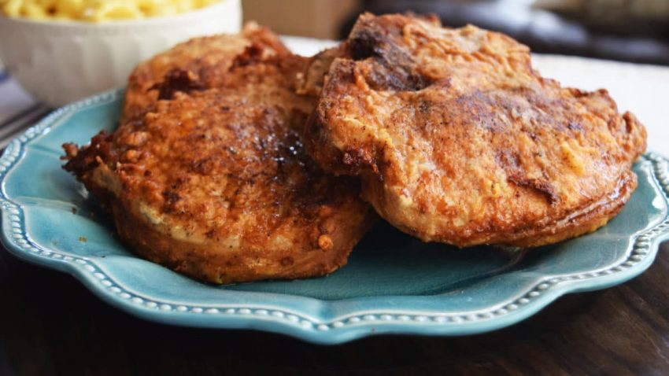

Fried Porkchops

Description
How to cook fried porkchops! Perfect for a summer dinner with greens and potato salad. This recipe is made in the true southern style, and a cast iron skillet is mandatory!
Instructions
- Buy Cast Iron Skillet
- Discard all other pans
- Buy Crisco
- buy Pork
- bread Pork
- fry porkchops
- ????
- profit
home